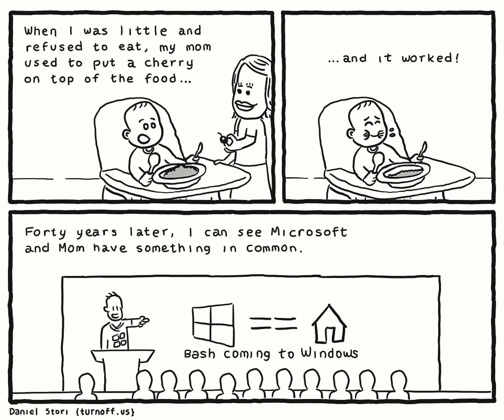
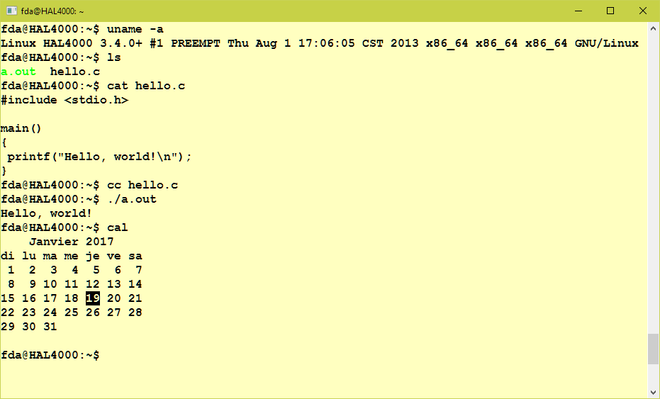
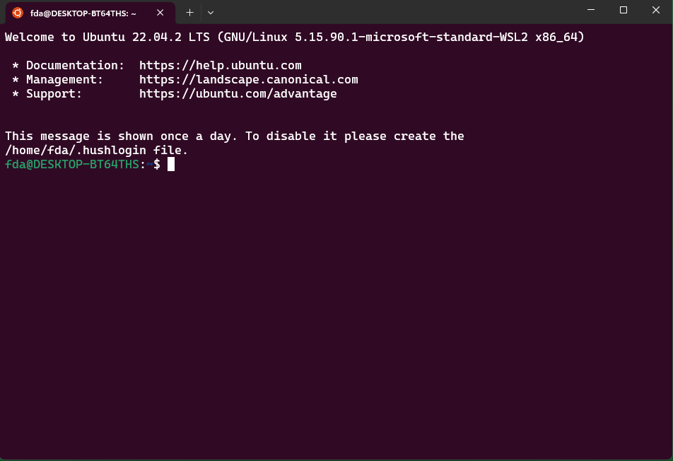

Phụ lục trả lời một câu nảy ra ở tab WSL2 của Bài 04. Bài 04 kể ba cách chạy chương trình Linux trên Windows: biên dịch lại, dịch syscall, và máy ảo. Vậy vì sao biên dịch lại và dịch syscall không đủ, và máy ảo của WSL2 khác máy ảo thường ở đâu?
Hai kernel, hai bộ syscall khác nhau
Vấn đề này có từ bao giờ? Từ lâu trước WSL. Phần lớn server chạy hệ điều hành kiểu Unix, ngày nay chủ yếu là
Linux, và công cụ của người làm hạ tầng, như bash, grep, ssh hay trình biên dịch C, sinh
ra trong thế giới đó. Trong khi đó, máy làm việc của rất nhiều developer chạy Windows. Người ta muốn dùng công cụ
của server ngay trên máy mình, để thứ chạy trên laptop giống thứ chạy trên server.
Sao không chép chương trình Linux sang Windows mà chạy? Bài 03 đã cho thấy vì sao không được. Một chương trình không tự làm gì với phần cứng, nó xin kernel qua syscall. Chương trình biên dịch cho Linux là một file theo định dạng ELF, định dạng file chạy được của Linux, và bên trong nó là các lời gọi theo đúng bộ syscall của Linux, từ số hiệu, tham số tới ý nghĩa.
Kernel Windows thì có định dạng file chạy được riêng và bộ lời gọi riêng, quen gọi là NT API theo tên dòng kernel Windows NT. Vì vậy đặt một file ELF lên Windows thì Windows không chạy nó, và kể cả nếu chạy thì các syscall của nó cũng không ai hiểu.
chương trình Linux (tệp ELF) chương trình Windows (tệp .exe)
│ │
│ syscall Linux │ NT API
▼ ▼
kernel Linux kernel WindowsCó ba hướng để giải, và cả ba đều đã được thử. Phụ lục kể theo thứ tự thời gian:
- Máy ảo: đặt một kernel Linux thật bên cạnh.
- Biên dịch lại: đổi chương trình Linux thành chương trình Windows, kèm một lớp thư viện bắt chước những gì Linux cung cấp.
- Dịch syscall: để chương trình Linux nguyên bản chạy, rồi dịch từng syscall của nó sang lời gọi của Windows.
WSL2 cuối cùng quay về máy ảo, nhưng sửa đúng những điểm yếu đã khiến người ta phải tìm hai hướng kia.
Cách giải đầu tiên cũng là cách hiển nhiên nhất, là chạy hẳn một máy Linux bên trong máy ảo. Nó chạy được, nhưng chưa đủ.
Máy ảo truyền thống
Cách thẳng nhất là đặt hẳn một máy Linux bên cạnh Windows, và có hai dạng. Dạng thứ nhất là cài song song hai hệ điều hành trên cùng ổ đĩa, rồi chọn một trong hai mỗi lần bật máy, gọi là dual boot. Nó cho Linux thật trên phần cứng thật, nhưng muốn dùng Linux thì phải tắt Windows.
Dạng thứ hai là máy ảo như Bài 04 đã định nghĩa. Một phần mềm như VirtualBox hay VMware Workstation dựng một máy tính ảo, và bên trong nó chạy một bản Linux đầy đủ với kernel của riêng nó.
Windows máy ảo (VirtualBox, VMware…)
───────────────────────────── ─────────────────────────────
trình duyệt, IDE, Git Bash Linux đầy đủ: kernel, bash…
ổ đĩa ảo riêng, mạng ảo riêng
cửa sổ riêng, tự bật, tự tắtMáy ảo có giải quyết được vấn đề không? Về kỹ thuật thì trọn vẹn, vì chương trình Linux nói chuyện với kernel Linux thật, không có gì phải dịch. Chỗ yếu của nó nằm ở việc dùng hằng ngày. Tài liệu của Microsoft tóm tắt chỗ yếu đó trong một câu: trải nghiệm máy ảo truyền thống "có thể khởi động chậm, bị cô lập, tốn nhiều tài nguyên, và đòi hỏi thời gian của bạn để quản lý nó".
Cô lập ở đây nghĩa là hai hệ thống khó dùng chung với nhau:
- file nằm trong ổ đĩa ảo, muốn mở bằng IDE trên Windows thì phải dựng thư mục chia sẻ;
- máy ảo có địa chỉ mạng riêng;
- RAM cấp cho máy ảo thường bị giữ chỗ dù không dùng tới.
Tính cô lập ấy cũng là lý do nhiều người khác cần máy ảo. Ảnh 1 là một ví dụ được đẩy tới mức buồn cười.
![Truyện năm khung. Một màn hình lớn hiện nhiều ô vuông nối nhau bằng đường kẻ. Pretty, isn't it? What is it? I've got a bunch of virtual Windows machines networked together, hooked up to an incoming pipe from the net. They execute email attachments, share files, and have no security patches. Between them they have practically every virus. There are mail trojans, Warhol worms, and all sorts of exotic polymorphics. A monitoring system adds and wipes machines at random. The display shows the viruses as they move through the network, growing and struggling. You know, normal people just have aquariums. Good morning, Blaster. Are you and W32.Welchia getting along? Who's a good virus? You are! Yes, you are!](img/xkcd-network.webp)
Nhưng với người chỉ cần gõ vài lệnh grep lên file của mình thì chi phí đó quá lớn, nên người ta tìm
cách nhẹ hơn.
Hướng biên dịch lại nhẹ hơn máy ảo nhiều. Nó để lại một thứ bạn đã dùng mỗi ngày từ Bài 00 mà có thể không để ý: Git Bash.
Cygwin: mang công cụ Unix sang, bằng cách biên dịch lại
Muốn tránh máy ảo thì phải để chương trình chạy thẳng trên kernel Windows, và Cygwin đi theo hướng đó.
Cygwin là gì? Theo trang chính thức của dự án, Cygwin là "một bộ sưu tập lớn các công cụ GNU và mã nguồn mở, cho
chức năng tương tự một bản phân phối Linux trên Windows". Nó kèm một thư viện cygwin1.dll "cung cấp
phần lớn chức năng của POSIX API". POSIX là bộ chuẩn mô tả những hàm mà một hệ điều hành kiểu Unix phải cung cấp cho
chương trình, như mở file, tạo process, gửi signal, và cygwin1.dll hiện thực các hàm đó bằng những gì
Windows có.
mã nguồn chương trình Unix (C)
│
│ biên dịch lại cho Windows
▼
tệp .exe của Windows ──► cygwin1.dll ──► NT API ──► kernel Windows
(hàm POSIX dựng
bằng hàm Windows)Cách này phải trả giá gì? Cái giá nằm ngay trong trang của dự án, ở mục Cygwin không là gì. Cygwin không phải "một cách để chạy ứng dụng Linux nguyên bản trên Windows", và "bạn phải biên dịch lại ứng dụng từ mã nguồn nếu muốn nó chạy trên Windows". Nghĩa là mỗi chương trình phải được ai đó biên dịch lại, còn chương trình nào chỉ có bản Linux đã biên dịch sẵn thì không dùng được.
Hơn nữa, vì bên dưới vẫn là kernel Windows nên những gì thuộc riêng kernel Linux không có cách nào xuất hiện, tức
không OOM killer, không dmesg, không systemd.
MSYS2, và Git Bash
MSYS2 là một dự án đi sau. Theo tài liệu của nó, "các công cụ kiểu Unix trong MSYS2 dựa trực tiếp trên Cygwin", nhưng mục tiêu thì khác, là cho developer quen Linux một môi trường dễ chịu trên Windows để xây dựng chương trình Windows.
MSYS2 chia công cụ của mình thành nhiều môi trường. Môi trường MSYS, đặt ở /usr, chứa các công cụ
kiểu Unix dựng trên nền Cygwin. Môi trường MINGW64, đặt ở /mingw64, chứa chương trình Windows thuần,
gọi thẳng hàm của Windows.
Git Bash liên quan gì tới MSYS2? Git for Windows, theo trang kỹ thuật của chính nó, "về cơ bản là một tập con của MSYS2 với một bộ gói được cài sẵn". Vậy Git Bash bạn dùng từ Bài 00 chính là bash của MSYS2, và điều này giải thích hai chuyện lạ đã gặp.
Chuyện thứ nhất ở
trang phân tích output của Bài 00:
which curl trả về /mingw64/bin/curl. curl của Git Bash là chương trình Windows
thuần trong môi trường MINGW64. Nó được dựng với thư viện TLS của Windows, nên không in thông tin chứng chỉ như bản
Linux.
Chuyện thứ hai là Bài 03 phải viết taskkill //F với hai dấu gạch. Theo tài liệu của MSYS2, khi gọi
một chương trình Windows từ môi trường dựng trên Cygwin, mọi tham số "trông giống đường dẫn Unix" được tự động đổi
sang đường dẫn Windows. Mà /F trông đúng như một đường dẫn.
Đây là lý do tab WSL2 của Bài 04 viết "Git Bash ra đời như vậy". Git Bash cho bạn bash và các lệnh quen thuộc,
nhưng mỗi lệnh là một chương trình Windows. Kernel bên dưới vẫn là Windows. Vì thế lab của Bài 03 chỉ thấy được
bản tương đương của signal, và dmesg báo command not found.
Hướng dịch syscall không biên dịch lại gì cả. Nó dịch từng syscall ngay lúc chương trình chạy.
WSL 1: chạy file ELF nguyên bản, dịch từng syscall
Năm 2016, Microsoft đưa vào Windows 10 một thành phần mới tên là Windows Subsystem for Linux, ra mắt cùng bản cập nhật Anniversary Update năm đó. Bài tổng quan trên blog của nhóm WSL, đăng ngày 22/04/2016, mô tả WSL là "một tập các thành phần cho phép file ELF64 Linux nguyên bản chạy trên Windows". Chữ "nguyên bản" là điểm khác Cygwin, vì không ai phải biên dịch lại gì. Bash của Ubuntu, nguyên file như trên server, chạy được trên Windows.
Microsoft công bố việc này tại hội nghị Build ngày 30/03/2016. Truyện ở Ảnh 2 ra ngay hôm sau.

WSL thế hệ đầu làm việc đó bằng gì? Phần cốt lõi của nó là hai driver. Driver là chương trình được nạp vào chạy ngay bên trong kernel Windows, ở kernel mode.
WSL is a collection of components that enables native Linux ELF64 binaries to run on Windows. It contains both
user mode and kernel mode components. It is primarily comprised of:
- User mode session manager service that handles the Linux instance life cycle
- Pico provider drivers (lxss.sys, lxcore.sys) that emulate a Linux kernel by translating Linux syscalls
- Pico processes that host the unmodified user mode Linux (e.g. /bin/bash)
It is the space between the user mode Linux binaries and the Windows kernel components where the magic happens.
By placing unmodified Linux binaries in Pico processes we enable Linux system calls to be directed into the Windows
kernel. The lxss.sys and lxcore.sys drivers translate the Linux system calls into NT APIs and emulate the
Linux kernel.
lxss.sys và lxcore.sys, giả lập kernel
Linux bằng cách dịch syscall Linux. Ba là các Pico process, chứa chương trình Linux không sửa đổi như
/bin/bash. Câu in đậm là cơ chế: hai driver dịch system call của Linux sang NT API và giả lập kernel
Linux. Trích nguyên văn
Windows Subsystem
for Linux Overview, đọc ngày 03/10/2026.Hình 4 chạy như sau. Chương trình Linux chạy trong một loại process đặc biệt của Windows gọi là Pico
process, một process gần như trống, không mang theo những thứ một process Windows thường có. Mỗi khi chương
trình gọi một syscall Linux, kernel Windows chuyển lời gọi đó tới hai driver lxss.sys và
lxcore.sys. Hai driver này đóng vai kernel Linux: tìm lời gọi Windows tương ứng, thực hiện, rồi trả kết
quả theo đúng cách kernel Linux sẽ trả. Vì vậy chương trình không biết mình đang chạy trên Windows.
bash của Ubuntu (tệp ELF nguyên bản), trong một Pico process
│
│ syscall Linux
▼
lxss.sys, lxcore.sys dịch syscall Linux sang NT API
│
│ NT API
▼
kernel WindowsẢnh 3 là một phiên Bash trên Windows 10, chụp tháng 1/2017. Lúc đó còn hơn hai năm nữa WSL 2 mới được công bố, nên chỉ có WSL 1.

cc rồi chạy nó. cc, ls, cal đều là file ELF của Linux, không ai
biên dịch lại cho Windows. Dòng đầu đáng nhìn nhất. uname -a là lệnh hỏi kernel tên và phiên bản của
nó. Nó nhận được câu trả lời Linux … 3.4.0+, dù trên máy không có kernel Linux nào. Câu trả lời ấy do
lớp dịch viết ra, đúng vai "giả lập kernel Linux" trong Hình 4.Giới hạn của việc dịch
Cách dịch này yếu ở đâu? Nó phải theo kịp toàn bộ những gì kernel Linux cung cấp. Linux có vài trăm syscall, mỗi cái có những trường hợp riêng, và kernel Linux còn cung cấp những thứ là cả một cơ chế chứ không gói trong một syscall. Syscall nào chưa được dịch, hoặc dịch chưa đúng từng chi tiết, thì chương trình cần nó hỏng.
Bài công bố WSL 2 năm 2019 nói thẳng hai yêu cầu lớn nhất của người dùng WSL 1, là tăng hiệu năng hệ thống file, và "làm nhiều ứng dụng chạy được hơn trong WSL", nghĩa là tương thích syscall tốt hơn. Ví dụ rõ nhất là Docker. Nó dựa vào những tính năng của kernel Linux mà lớp dịch không có, nên không chạy được trong WSL 1. Bảng so sánh chính thức của Microsoft hôm nay vẫn ghi WSL 1 không có kernel Linux đầy đủ và không tương thích syscall đầy đủ.
Bước cuối quay về máy ảo, nhưng là một máy ảo đã bỏ phần lớn những điểm yếu nêu ở tab Máy ảo đầy đủ.
Ngày 6/5/2019: một kernel Linux thật trong Windows
Ngày 6/5/2019, nhóm WSL công bố WSL 2 với một câu kết luận gọn, ở Hình 6: "WSL 2 dùng một kiến trúc hoàn toàn mới, dùng một kernel Linux thật". Cùng ngày, một bài khác của nhóm, Shipping a Linux Kernel with Windows, nói rằng đây là "lần đầu tiên kernel Linux được đưa vào như một thành phần của Windows". Kernel ấy ban đầu dựa trên bản 4.19, bản ổn định dài hạn mới nhất của Linux lúc đó. Nó được công bố mã nguồn đầy đủ, và được tinh chỉnh để khởi động nhanh, tốn ít bộ nhớ.
Today we’re unveiling the newest architecture for the Windows Subsystem for Linux: WSL 2! Changes in this new
architecture will allow for: dramatic file system performance increases, and full system call
compatibility, meaning you can run more Linux apps in WSL 2 such as Docker.
[…]
Our top requests from the WSL community have been to increase the file system performance, and make more apps
work inside of WSL (i.e: introduce better system call compatibility). We have heard your feedback, and are glad to
announce that WSL 2 helps solve these issues.
WSL 2 is a new version of the architecture that powers the Windows Subsystem for Linux to run ELF64 Linux
binaries on Windows. This new architecture changes how these Linux binaries interact with Windows and your
computer’s hardware, but still provides the same user experience as in WSL 1 (the current widely available
version). Individual Linux distros can be run either as a WSL 1 distro, or as a WSL 2 distro, can be upgraded or
downgraded at any time, and you can run WSL 1 and WSL 2 distros side by side. WSL 2 uses an entirely new
architecture that uses a real Linux kernel.
Vẫn là máy ảo, vậy WSL 2 khác máy ảo truyền thống ở đâu? Khác ở cách máy ảo được quản lý. Máy ảo vẫn có, nhưng Windows tự bật, tự tắt và tự quản lý nó. Theo tài liệu của Microsoft, WSL 2 "giữ trải nghiệm người dùng như WSL 1" và "không cần cấu hình hay quản lý máy ảo". Bạn không mở cửa sổ máy ảo nào, không cấp RAM cố định, chỉ mở Ubuntu và gõ lệnh như trước.
So với tab Máy ảo đầy đủ thì ba điểm yếu "khởi động chậm, tốn tài nguyên, phải tự quản lý" đã được gỡ. Điểm thứ tư, "cô lập", được làm mềm bằng cách cho Windows và Linux gọi chương trình và đọc file của nhau. Ảnh 4 chụp đúng cảnh đó, hơn sáu năm sau Ảnh 3, và dòng chào của Ubuntu cho thấy thứ đã đổi ở bên dưới.

5.15.90.1-microsoft-standard-WSL2 là phiên bản của một kernel Linux thật do Microsoft biên dịch, thay
cho câu trả lời 3.4.0+ của lớp dịch ở Ảnh 3.WSL 2 phát hành chính thức cùng Windows 10 bản 2004, năm 2020. Bài thông báo của nhóm WSL ngày 13/03/2020 còn cho
biết một thay đổi về cách phân phối: kernel Linux được tách khỏi bản cài Windows và gửi tới máy người dùng qua
Windows Update, "giống như cách cài driver của bên thứ ba". Về sau, chính WSL cũng được tách thành một gói trên
Microsoft Store để cập nhật nhanh hơn, và lệnh wsl --update kéo bản mới nhất về.
Giới hạn của WSL 2
WSL 2 có mất gì so với WSL 1 không? Có. File của Linux giờ nằm trong ổ đĩa ảo của máy ảo, nên việc đọc file qua lại giữa hai hệ điều hành chậm hơn WSL 1. Ngay dưới bảng so sánh chính thức, Microsoft viết rằng WSL 2 hơn WSL 1 ở nhiều mặt, trừ hiệu năng đọc file giữa hai hệ điều hành, và khuyên đặt file dự án cùng phía với công cụ dùng nó. Máy cũng phải hỗ trợ và bật ảo hoá phần cứng, điều WSL 1 không cần.
Đổi lại, mọi thứ thuộc kernel Linux có mặt đầy đủ, gồm signal thật, OOM killer, dmesg, và về sau cả
systemd.
Những gì còn lại tới hôm nay
Cả bốn cách vẫn đang được dùng, mỗi cách hợp với một việc. Bảng 1 đặt chúng cạnh nhau theo ba câu hỏi đã dẫn đường cho cả phụ lục.
| Cách | Chương trình Linux có phải biên dịch lại? | Ai trả lời syscall? | Còn gặp ở đâu hôm nay |
|---|---|---|---|
| Máy ảo đầy đủ | Không | Kernel Linux trong máy ảo | VirtualBox, VMware; phần lớn VPS bạn thuê |
| Cygwin, MSYS2 | Có | Kernel Windows, qua thư viện POSIX | Git Bash |
| WSL 1 | Không | Kernel Windows, qua driver dịch syscall | wsl --set-version <distro> 1, khi cần đọc file Windows nhanh |
| WSL 2 | Không | Kernel Linux thật trong máy ảo nhẹ | Mặc định của WSL; nền của Docker Desktop |
Dòng cuối của bảng nói gì về Docker? Docker Desktop trên Windows không tự dựng máy ảo riêng như VirtualBox. Theo
tài liệu của Docker, nó chạy trong distro WSL riêng tên docker-desktop, nghĩa là nó dựa thẳng vào kernel
Linux mà WSL 2 mang tới, và chạy trong chính máy ảo nhẹ mà Windows tự quản.
Nối về bài chính
Câu hỏi của Bài 04 là làm sao có một máy Linux thật trên máy Windows, để thấy process, signal và lỗi đúng như trên server. Phụ lục cho thấy vì sao chữ "thật" ở đây quan trọng. Git Bash và WSL 1 đều cho bạn bash, nhưng chỉ WSL 2 cho bạn kernel Linux. Mà mọi thứ Bài 03 muốn quan sát đều nằm trong kernel.
Từ đây, quay lại tab WSL2 của Bài 04 để xem máy ảo đó hoạt động thế nào, hoặc đi thẳng tới Lab để dựng nó.
Nguồn đọc thêm
- Windows Developer Blog, Run Bash on Ubuntu on Windows (30/03/2016), bài công bố ở hội nghị Build 2016. blogs.windows.com
- Microsoft, Windows Subsystem for Linux Overview (22/04/2016), kho lưu trữ blog. learn.microsoft.com
- Microsoft Command Line blog, Announcing WSL 2 (06/05/2019). devblogs.microsoft.com
- Microsoft Command Line blog, Shipping a Linux Kernel with Windows (06/05/2019). devblogs.microsoft.com
- Microsoft Command Line blog, WSL 2 will be generally available in Windows 10, version 2004 (13/03/2020). devblogs.microsoft.com
- Microsoft Learn, Comparing WSL Versions. learn.microsoft.com
- Cygwin, trang chính thức. cygwin.com
- MSYS2, What is MSYS2?, Environments, Filesystem Paths. msys2.org/docs/what-is-msys2 · environments · filesystem-paths
- Git for Windows, Technical overview. gitforwindows.org
- Docker Docs, WSL 2 backend on Windows. docs.docker.com/…/wsl
Nguồn ảnh
Hai ảnh chụp màn hình lấy từ Wikimedia Commons theo giấy phép ghi ở từng dòng; giữ nguyên màu và kích thước, chỉ đổi định dạng file. Hai truyện tranh, của xkcd và của turnoff.us, dùng theo giấy phép phi thương mại ghi ở từng dòng; đã đổi cỡ và chuyển sang đen trắng.
- Ảnh 1Network, Randall Munroe, xkcd.com, CC BY-NC 2.5.
- Ảnh 2Bash on Windows, Daniel Stori, turnoff.us, CC BY-NC-SA 4.0.
- Ảnh 3Linux on Windows 10, François-Dominique, Wikimedia Commons, CC BY-SA 4.0.
- Ảnh 4Ubuntu on Windows, François-Dominique, Wikimedia Commons, CC BY-SA 4.0.